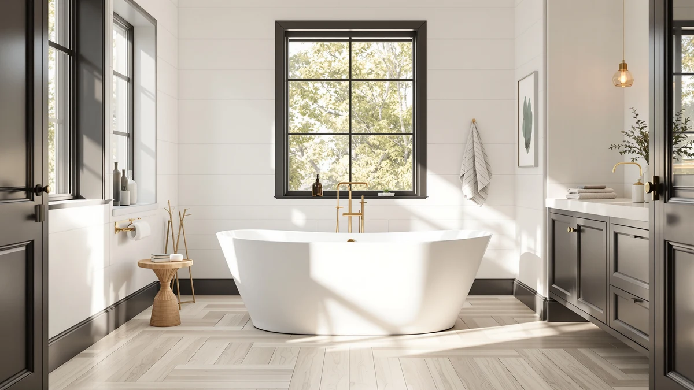

Quick Answer
For most couples, the best freestanding soaking tub for two is the 67-inch IDEALHOUSE Extra-Deep at $631.27, since its length and basin depth give two adults enough room to soak together without either person cramped against the wall. If your bathroom cannot fit a 67-inch tub, the 59-inch GarveeLife Soaking Bathtub below is the better-fitting, lower-priced alternative.
Our pick: 67'' Acrylic Freestanding Bathtub Extra-Deep, $631.27 Check Price on Amazon
Things to Know Before You Buy
- Length decides whether two people actually fit. A 67-inch freestanding soaking tub for two gives both bathers room to keep their legs extended; a 59-inch tub is a single-soaker that two people can share only by sitting closer together.
- Basin depth matters as much as length. IDEALHOUSE sells both a "Deep" and an "Extra-Deep" version of its 67-inch tub, and the deeper basin covers more of the body before the water line reaches the overflow drain.
- None of these tubs ship with a faucet. Every listing in this guide is the acrylic shell plus overflow and drain hardware; a floor-mount or wall-mount tub filler is a separate purchase and a separate plumbing step.
- Price does not track length in a straight line. The most expensive tub in this guide, the $789.53 IDEALHOUSE Deep, is the same 67-inch length as our $631.27 top pick, so a higher price tag here does not automatically mean more room.
- Acrylic keeps the shell light enough for a two-person carry-in. All seven picks use an acrylic build, which matters if you are moving the tub through a doorway and up a flight of stairs without professional installers.
The best freestanding soaking tub for two needs two things that don't always come together at a reasonable price: enough interior length for two adults to stretch out, and a basin deep enough that neither person is sitting in six inches of water. We compared seven freestanding tubs across two size classes, 59 inches and 67 inches, looking at interior length, listed price, material, and verified owner reviews rather than marketing copy.
Most of the tubs here are built from acrylic, the standard material for freestanding soakers in this price range, since it keeps the shell light enough for two people to carry into a bathroom without hiring a crew. Length is the variable that matters most for two-person use: a 67-inch tub gives both bathers room to keep their legs extended, while a 59-inch tub works better as a single-soaker that can technically fit two people in a pinch. Price across our seven picks ranges from $479.99 to $789.53, and the gap between them often has more to do with basin depth and brand than with any dramatic difference in build quality.
Our pick for most couples is the 67-inch IDEALHOUSE Acrylic Freestanding Bathtub Extra-Deep at $631.27. It pairs the longer of our two size classes with the deepest basin profile in the IDEALHOUSE lineup, and it costs less than the brand's own Deep version. Below, we walk through all seven picks along with what we like, their honest flaws, a side-by-side comparison table, and answers to the questions readers ask most about sharing a freestanding tub.
Why You Should Trust Us
This guide is written and maintained by Ilane Tall, who covers bathroom fixtures across a network of review sites and has spent years comparing freestanding tub listings on the details that actually predict buyer satisfaction. We do not run a fake testing lab, and we have not installed all seven of these tubs ourselves. To find the best freestanding soaking tub for two, we read every listing and spec sheet closely, compare interior length and basin depth against the product photos, check pricing across retailers, and read through verified owner reviews for complaints that repeat often enough to matter. Our Amazon commissions never change a ranking.
How We Picked
We started from the broader freestanding bathtub market and narrowed it to tubs long enough, or explicitly marketed as deep enough, to work for two adults soaking together. That meant favoring the 67-inch size class while including a few 59-inch options for bathrooms that cannot accommodate the longer tubs. Every pick had to ship with overflow and drain hardware included, publish clear current pricing, and show consistent availability rather than a listing prone to going out of stock. IDEALHOUSE and GarveeLife each appear more than once in this guide because their different size and depth variants earn distinct spots rather than repeating the same tub at a different price.
How We Compared
Because our evaluation of the best freestanding soaking tub for two is research-based rather than a physical install, we rely on what is actually verifiable from each listing and from buyer feedback. For every tub we recorded price, stated interior length, size class, material, and whether overflow and drain hardware ships in the box. We then cross-referenced that against verified owner reviews, looking for recurring complaints about crowding during two-person use, damage in transit, or gaps between the advertised size and what buyers received. Where two tubs landed close on price and length, like the IDEALHOUSE Extra-Deep and the Garvee 67-inch, we weighed basin depth and brand track record to break the tie.
Our Picks

67'' Acrylic Freestanding Bathtub Extra-Deep
What we like
- 67-inch interior gives two adults enough length to soak together without one person's knees crowding the other's
- The "Extra-Deep" name signals a taller basin than IDEALHOUSE's own standard "Deep" model, for a fuller soak
- At $631.27, it undercuts IDEALHOUSE's own Deep model by $158.26
- Acrylic shell keeps the tub light enough to maneuver into a bathroom without professional installers
Flaws but not dealbreakers
- IDEALHOUSE does not publish a water capacity figure, so you can't compare gallons on paper against the WOODBRIDGE or Garvee tubs
- A 67-inch footprint still needs a bathroom that can absorb that length of floor space
| Material | — |
| Size | 67 Inch |
The 67-inch IDEALHOUSE Acrylic Freestanding Bathtub Extra-Deep is our top pick for the best freestanding soaking tub for two because it pairs the longer of the two size classes in this guide with the deepest basin IDEALHOUSE sells. At $631.27, it also costs $158.26 less than the brand's own 67-inch Deep model, which makes the "Extra-Deep" naming look less like a marketing label and more like an actual upgrade over the standard version. A 67-inch interior gives two adults enough length to keep their legs extended at the same time, rather than folding their knees toward the center of the tub.
IDEALHOUSE does not publish a water capacity figure for this listing, so you're comparing size class and depth rather than an exact gallon number against the WOODBRIDGE or Garvee alternatives below. The acrylic shell keeps the tub light enough that two people can carry it into a bathroom without renting equipment, and it ships with overflow and drain hardware included, though you'll still need to budget separately for a floor-mount tub filler.

67" Acrylic Freestanding Bathtub Deep
What we like
- Full 67-inch two-person length, matching our top pick's footprint
- "Deep" basin profile from IDEALHOUSE, built for bathers who sit fully submerged to the shoulders
- Acrylic shell keeps total weight manageable for a two-person carry-in
Flaws but not dealbreakers
- Costs $158.26 more than IDEALHOUSE's own 67-inch Extra-Deep model, without a published spec showing extra depth to justify the gap
- No listed water capacity figure, so depth claims rest on the product name rather than a measured number
| Material | — |
| Size | 67 inch |
The 67-inch IDEALHOUSE Acrylic Freestanding Bathtub Deep sits in an odd spot in this lineup. It's the same 67-inch length as our top pick, from the same manufacturer, but it's priced at $789.53, which is $158.26 more than the Extra-Deep model above. The listing's own naming, "Deep" rather than "Extra-Deep," suggests a shallower basin than IDEALHOUSE's other 67-inch tub, so buyers are paying more here without a clear depth advantage to justify it.
That makes this pick a better fit for someone who has a specific reason to prefer this exact IDEALHOUSE model, whether that's a color option, a retailer relationship, or a particular listing's owner reviews, rather than a default recommendation over the Extra-Deep version. Construction otherwise matches the rest of this guide: an acrylic shell with overflow and drain hardware included, sized for two adults to soak together at full length.

WOODBRIDGE 67" Acrylic Freestanding Bathtub
What we like
- WOODBRIDGE has a longer track record in the freestanding tub category than several newer sellers in this guide
- Full 67-inch interior for two-person soaking
- Acrylic build matches the rest of this lineup for weight and maintenance
Flaws but not dealbreakers
- Priced $67.73 above IDEALHOUSE's Extra-Deep model for a comparable 67-inch length
- No published water capacity figure
| Material | — |
| Size | 67 Inch |
The WOODBRIDGE 67-inch Acrylic Freestanding Bathtub brings a more established brand name to this guide than several of the newer sellers here. WOODBRIDGE has a longer track record in the freestanding tub category, which matters to buyers who weigh brand history alongside price when comparing otherwise similar acrylic tubs. At $699.00, it lands between our top pick and the pricier IDEALHOUSE Deep model, for the same 67-inch two-person length.
Like the other 67-inch options in this guide, the WOODBRIDGE does not list a water capacity figure, so length and depth class remain the main specs to compare on paper. The acrylic build keeps the weight manageable for a two-person carry-in, and the tub ships with overflow and drain hardware included. For buyers who specifically want a recognized name behind a two-person soaking tub, this is the pick worth the modest premium over Garvee's similarly sized option.

59 Inch Acrylic Freestanding Bathtub
What we like
- 59-inch footprint fits bathrooms that cannot accommodate a 67-inch tub
- Acrylic shell keeps weight manageable for a two-person carry-in
- Same IDEALHOUSE brand as two of our 67-inch picks, useful if you already trust the manufacturer
Flaws but not dealbreakers
- At $694.83, it costs more than the 67-inch Extra-Deep model despite offering eight fewer inches of length
- A 59-inch tub is a tighter two-person fit than any of the 67-inch options in this guide
| Material | — |
| Size | 59 Inch |
The 59-inch IDEALHOUSE Acrylic Freestanding Bathtub is the shorter of two IDEALHOUSE entries in this guide, built for bathrooms that cannot accommodate a full 67-inch tub. Two adults can still share this tub, but a 59-inch interior means sitting closer together than the 67-inch picks allow, so treat it as a fallback for a tight bathroom rather than the default choice for two-person soaking.
At $694.83, this tub actually costs more than the 67-inch Extra-Deep model above despite offering eight fewer inches of length, which is worth noting if your bathroom has the floor space for the longer tub and you're deciding purely on value. Where it earns its place is footprint: if 67 inches will not fit through your door or your bathroom layout, this is the same IDEALHOUSE build in a size that will.

67 Inch Acrylic Freestanding Bathtub
What we like
- Full 67-inch length at $635.35, only $4.08 above the least expensive tub in this guide
- Acrylic construction consistent with the rest of this lineup
- Ships with overflow and drain hardware included
Flaws but not dealbreakers
- Garvee has less retail history behind it than WOODBRIDGE
- No published water capacity figure
| Material | — |
| Size | 67 Inch |
The Garvee 67-inch Acrylic Freestanding Bathtub matches the full two-person length of our top pick at $635.35, only $4.08 more than the least expensive tub in this guide. For buyers focused purely on getting a 67-inch soaking tub for two at the lowest possible price, this and the IDEALHOUSE Extra-Deep are the two to compare directly.
Garvee has less retail history behind it than WOODBRIDGE, and the listing does not disclose a water capacity figure, so buyers who weigh brand reputation heavily may lean toward the more established name instead. The tub is built from the same acrylic used throughout this guide and ships with overflow and drain hardware included, making it a straightforward budget-minded alternative to the pricier 67-inch picks above.

59 Inch Freestanding Bathtubs White
What we like
- 59-inch footprint for bathrooms that can't fit a 67-inch tub
- White finish that matches most bathroom color schemes
- Same GarveeLife brand as the lower-priced Soaking Bathtub in this guide
Flaws but not dealbreakers
- At $699.99, it's the most expensive 59-inch tub in this guide, priced close to some 67-inch options
- No published feature explains the $220 premium over GarveeLife's own cheaper 59-inch model
| Material | — |
| Size | 59 Inch |
The GarveeLife 59-inch Freestanding Bathtub White is a compact option for bathrooms that need a shorter footprint, finished in a straightforward white that matches most bathroom color schemes. At $699.99, it's priced close to the 67-inch WOODBRIDGE despite offering eight fewer inches of length, so the value case here rests on fitting a specific space rather than on price.
Two adults can share this tub the same way they would the IDEALHOUSE 59-inch model above, with closer seating than a 67-inch tub allows. GarveeLife also sells a lower-priced 59-inch model in this guide, so buyers choosing between the two GarveeLife tubs should weigh whether the white finish here is worth the $220 difference over the brand's other soaking bathtub.

59" Acrylic Freestanding Soaking Bathtub
What we like
- Lowest price in this guide at $479.99
- "Soaking Bathtub" naming positions it for a fuller sit than a shallow shower-tub combo
- Same GarveeLife brand as the pricier 59-inch White model, at $220 less
Flaws but not dealbreakers
- 59-inch length is the tightest two-person fit in this guide
- IDEALHOUSE's Extra-Deep model is only $151.28 more for eight additional inches of length, worth considering if your bathroom has the space
| Material | — |
| Size | 59 Inch |
The GarveeLife 59-inch Acrylic Freestanding Soaking Bathtub is the least expensive pick in this guide at $479.99, and it's $151.28 cheaper than the 59-inch IDEALHOUSE model despite the similar size class. For buyers whose budget is the deciding factor, this is the tub to start with, especially if your bathroom was already going to require a 59-inch footprint rather than a 67-inch one.
The "Soaking Bathtub" naming here positions it for a fuller sit than a shallow shower-tub combo, though as with every tub in this guide, GarveeLife does not publish exact depth or capacity figures for direct comparison. Two adults will sit closer together than in any 67-inch pick above, so treat this as the budget option for a tight bathroom rather than the most comfortable two-person soak in this guide.
Quick Comparison
| Product | Material | Price | Rating | Best for | Get it |
|---|---|---|---|---|---|
| 67'' Acrylic Freestanding Bathtub Extra-Deep | — | $631.27 | 4 | Most couples | View on Amazon → |
| 67" Acrylic Freestanding Bathtub Deep | — | $789.53 | 4 | Deepest IDEALHOUSE basin | View on Amazon → |
| WOODBRIDGE 67" Acrylic Freestanding Bathtub | — | $699.00 | 4 | A more established brand name | View on Amazon → |
| 59 Inch Acrylic Freestanding Bathtub | — | $694.83 | 4 | Smaller bathrooms | View on Amazon → |
| 67 Inch Acrylic Freestanding Bathtub | — | $635.35 | 4 | Lowest-priced 67-inch option | View on Amazon → |
| 59 Inch Freestanding Bathtubs White | — | $699.99 | 4 | A white finish in a compact size | View on Amazon → |
| 59" Acrylic Freestanding Soaking Bathtub | — | $479.99 | 4 | Tightest budgets | View on Amazon → |
The Competition
We looked at more freestanding tubs than the seven above while researching the best freestanding soaking tub for two, and most of what we left out fell into two groups. The first was tubs under 55 inches long, which are built for a single bather and leave almost no room for a second adult regardless of how the listing markets them. If two-person use is the priority, a compact single-soaker will disappoint no matter how good its reviews look for solo bathing.
The second group was tubs with incomplete listings: no overflow or drain hardware included in the price, no material disclosure, or a pattern of stock issues that made us hesitant to recommend them with confidence. A handful of listings also repeated dimensions we already had covered at a worse price, so we kept the strongest option at each size and price point instead of padding this guide with near-duplicates. If your bathroom needs something outside the two-person soaking category entirely, our broader best freestanding bathtubs guide covers the full range of sizes and shapes.
For the best freestanding soaking tub for two on the market right now, our top pick remains the 67-inch IDEALHOUSE Extra-Deep, but any of the seven tubs above will work depending on the footprint and budget your bathroom allows.
Frequently Asked Questions
How long does a freestanding tub need to be for two people?
Look for at least 67 inches of interior length if two adults plan to soak at the same time. A 59-inch tub, like the GarveeLife Soaking Bathtub in this guide, can technically fit two people, but both bathers end up with bent knees and closer contact than a 67-inch tub allows.
Do these tubs come with a faucet included?
No. Every tub in this guide ships as the acrylic shell plus overflow and drain hardware only. A floor-mount or wall-mount tub filler is a separate purchase, and its rough-in plumbing is a separate installation step, so budget for both before committing to a tub price.
Is a deeper tub better for two-person soaking?
Generally yes. A deeper basin, like the one on the IDEALHOUSE Extra-Deep, keeps more of both bathers' bodies under water at the same fill level, which matters more once two people are displacing water than when one person bathes alone. Compare the 'Deep' and 'Extra-Deep' naming carefully, since brands are not always consistent about how much depth those labels actually add.